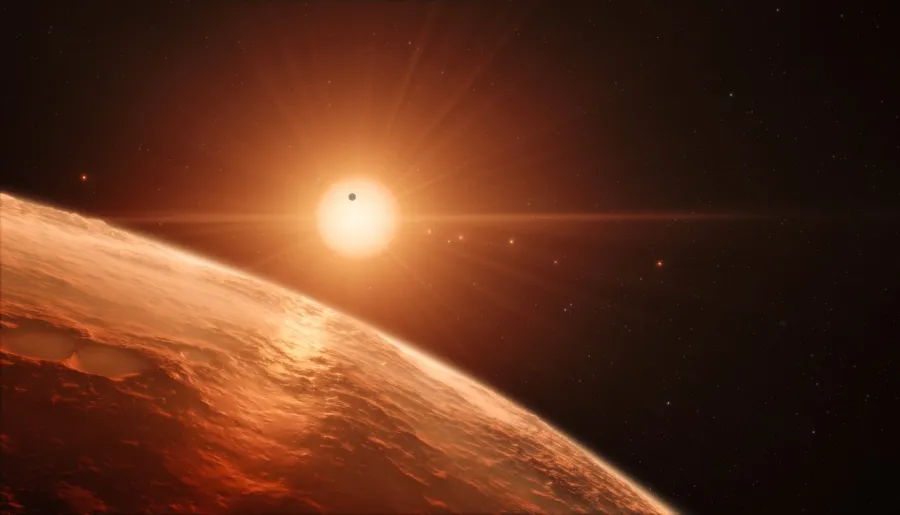

22. Februar 2017
TRAPPIST-1: sieben erdgroße Planeten bei einem Zwergstern
Um den nur 40 Lichtjahre entfernten Zwergstern TRAPPIST-1 kreisen mindestens sieben Planeten, die alle etwa so groß sind wie die Erde. Nachgewiesen wurden TRAPPIST-1 b, c, d, e, f, g und h über Transits, unter anderem mit dem Teleskop TRAPPIST-Süd auf La Silla, dem Very Large Telescope und dem Weltraumteleskop Spitzer. Drei Planeten waren bereits Anfang 2016 gemeldet worden.
Der Stern hat nur 8 Prozent der Sonnenmasse. Die Bahnen sind kaum größer als das System der Galileischen Jupitermonde. Drei Planeten liegen in der habitablen Zone; zumindest die inneren sechs bestehen den Dichtemessungen zufolge wahrscheinlich aus Gestein.
Quelle: ESO: "Ultracool Dwarf and the Seven Planets", 22.02.2017